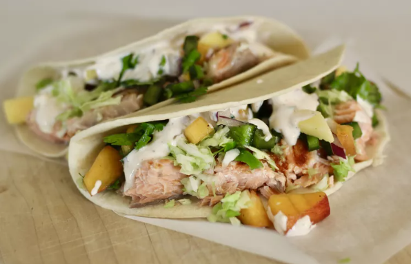

Salmon Tacos with Mango Salsa

Ingredients
Mango Salsa:
- 3 mangoes, diced
- 2 peaches, diced
- 3 poblano peppers, seeded and diced
- ½ red onion, diced, or more to taste
- ½ lime, juiced, or more to taste
- 1 bunch cilantro, chopped, divided
Special Sauce:
- 1 (8 ounce) container sour cream
- 3 tablespoons mayonnaise
- 1 tablespoon ketchup
- ⅛ teaspoon ground cayenne pepper
- salt and ground black pepper to taste
- 24 (6 inch) corn tortillas
- cooking spray
- 2 pounds fresh salmon
- 1 small head cabbage, shredded
- 3 avocados, sliced
- 2 limes, cut into wedges
Directions
- Combine mangoes, peaches, poblano peppers, red onion,
juice of 1/2 a lime, and 1/2 the cilantro in a large bowl to make mango salsa.
Cover with plastic wrap and refrigerate, at least 1 hour, preferably overnight.
- Mix sour cream, mayonnaise, ketchup, cayenne pepper, salt, and black pepper in a small bowl to make special sauce.
- Preheat oven to 350 degrees F (175 degrees C). Arrange tortillas on a baking sheet.
- Preheat a grill pan over medium-high heat; coat with cooking spray.
Cook salmon until easily flaked with a fork, about 4 minutes per side.
Transfer to a plate and flake into smaller pieces with a fork.
- Heat tortillas in the preheated oven until warmed through, about 5 minutes.
- Divide salmon among tortillas. Top with mango salsa, special sauce, shredded cabbage, avocados, and remaining cilantro.
Wrap up tacos and serve lime wedges alongside.